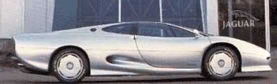
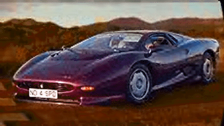

Jaguar XJ220




Specs
Price |
$706,000 |
Top Speed |
208mph(record 217.3mph) |
Acceleration |
|
Engine |
|
0-30mph |
N/A |
Type |
Twin Turbo V6, 24valve Quad cam |
0-60mph |
3.8sec |
Displacement |
3.5L(3491cc) |
0-100 |
7.3sec |
Power |
542hp@7200rpm |
1/4 mile |
11.3sec/?mph |
Torque |
475 lbs-ft@4500rpm |
Weight |
3,241 lbs |
Handling |
|
Gas mileage |
12.9mpg |
Skidpad |
N/A |
City |
N/A |
600ft slalom |
N/A |
Highway |
N/A |
Powertrain |
Mid-engined, rear wheel drive, 6 speed manual |
(? = incomplete data or unverified info, N/A = info Not Available)
Beyond the specs:
Who ever said that you can not have luxury in your 200+mph supercar? Designed to reach up to 220mph (hence the name) this Jaguar has an aerodynamic look and its performance surpassed all the other cars on the road at the time. Unfortunately, it was sold at a high price during a time of economic recession few were sold and only 281 were made before the factory closed down. Still, this Jaguar despite having only a V6 is the most powerful street legal Jaguar ever and is still the fastest Jaguar ever. It is a very safe car and did very well in government crash tests. It is a little heavy for a car in its class despite using mostly aluminum in its chassis, but with over 500hp on tap that does not matter as the acceleration numbers show. This car was built by a team of enthusiast engineers who worked in secrete for no pay before finally showing Jaguar what they created. This beautiful Jaguar is a very high quality machine, its speed is still among the top three fastest cars ever made and its luxury is unfound in most cars in its class (Mclaren F1 & Bugatti EB110). This relic of Jaguar history is a guaranteed attention getter that will outperform almost any car that dares to challenge it and it will do it all while protecting its driver and cocooning them in Jaguar luxury.
~Oracle